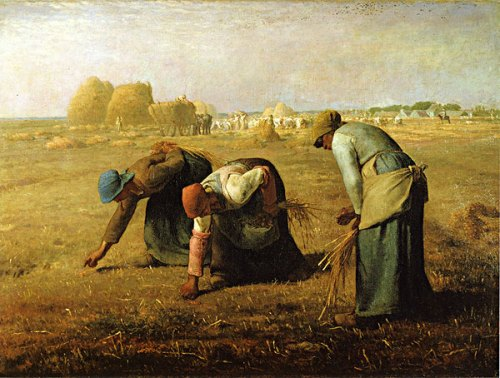
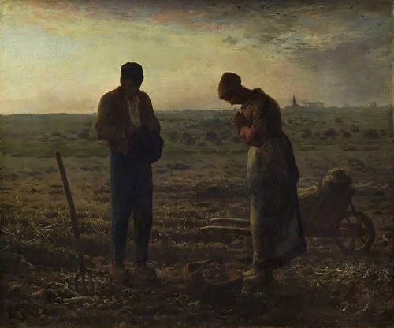
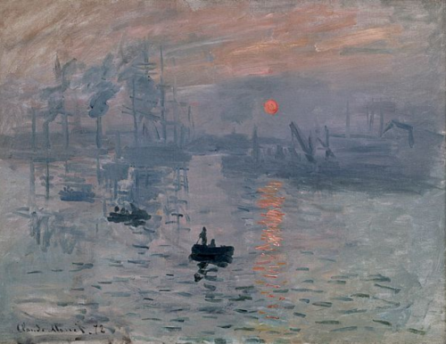
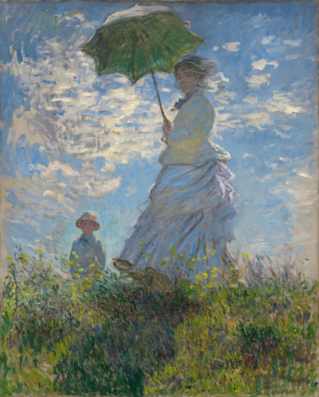

HELLO WORLD
Toggle navigation
J H G
Home
Art
Music
Skills
Testimonials
Contact
Welcome To Art World
Music oft hath such a charm
To make bad good，and good provoke to harm．
Leonardo da Vinci
Mona Lisa's smile
It was created from about 1503 to 1506
77cm vertical, 53cm horizontal
The Mona Lisa was Da Vinci's favorite
and the artist kept it close to him
during his lifetime.
It was not until after leonardo's death
that king Francis I of France used 12,000 livres
to buy it from one of his disciples.
Since then,
the work has been collected
in the Louvre in France
It's dreamy and mysterious
———J H G
The Last Supper
It was created from about 1494 to 1498
420cm vertical, 910cm horizontal
The last supper by leonardo Da Vinci
not only marked the peak of
his artistic achievement
but also the maturity
and greatness of Renaissance art creation>
———J H G
Jean-Francois Millet

The Gleaners
It was created from about 1857
83.5cm vertical, 111cm horizontal
It is a work of art, very beautiful and simple
independent of comment
His subject matter is very moving and precise
But it is painted so frankly that it rises above
the usual partisan arguments
and without the need for lies or hyperbole
shows the true and great pages of nature
like those of Homer and Virgil
———J H G
L'Angélus
It was created from about 1895
55cm vertical, 66cm horizontal
L'Angélus is a representative work of miller
marking the peak of his artistic career
At the same time
it has a certain religious color
and is a great treasure in the history of art
Miller's "the bell", "the gleaner"
"the sower" are known
as the immortal three works
Today, it is regarded as a national
treasure by the French
———J H G

Claude Monet

Impression Sunrise
It was created from about 1872
48cm vertical, 64cm horizontal
This painting is the first work of impressionism
which marks the emergence of impressionism
impressionism later became a worldwide school
of painting with a far-reaching influence
It emphasizes the light and color
in nature and regards the change
of light and color as
the mainstream of painting
Monet is believed to be the first
impressionist to use the technique of outer
light in his paintings
———J H G
woman with a Parasol-Madame Monet and her son
It was created from about 1875
81cm vertical, 100cm horizontal
The painting, dated 1875
depicts monet's first wife Camille and their son
Camille married monet in June 1870
In the same year
the franco-prussian war broke out
which made the painter's life even worse
The painting portrays a beautiful
dignified woman with her body on one side
and the folds because of her
The rotation is also in the rotation
she with a comfortable smile
wandering in the picturesque fields
of course
there is also a sense of aristocratic women idleness
———J H G

Welcome To Music World
The following are some of
my favorite piano music
巴洛克
Johann Sebastian Bach
Aria Sul G
It was created from about 1727 to 1736
The principal violin got its name
because it had to play
the whole melody on the G string
the thickest of the four strings
It's dreamy and mysterious
———J H G
Cello Suite No.1, Prelude
It was created from about 1727 to 1736
If you're a music lover
not listening to
Bach is like missing
out on the entire baroque
———J H G
古典
Ludwig van Beethoven
Sonata No. 14 in C-Sharp Minor, Op. 27 No. 2 "Moonlight": I. Adagio sostenuto
It was created from about 1801
Beethoven's love for life
nd mankind is like the sun of Apollo
shining brightly on every note
The second movement of pathetique is played
by the girls in the Korean drama
"love has a destiny" as a piano solo at school
———J H G
Grande Sonata Pathetique OP.13
It was created from about 1798 to 1799
Beethoven's love for life
nd mankind is like the sun of Apollo
shining brightly on every note
The second movement of pathetique is played
by the girls in the Korean drama
"love has a destiny" as a piano solo at school
———J H G
浪漫
Frédéric François Chopin
Op. 25, 12 Études No. 11 in A minor ("Winter Wind")
It was created from about 1830
Nocturne is one of the most exquisite treasures
in Chopin's music creation
It depicts the nature of the night
and confides the author's words
in the romantic art style
Its main characteristics are the quiet
and beautiful melody
and the exquisitely carved piano texture
———J H G
Nocturne op. 9 no 2 Eb min
It was created from about 1830
Nocturne is one of the most exquisite treasures
in Chopin's music creation
It depicts the nature of the night
and confides the author's words
in the romantic art style
Its main characteristics are the quiet
and beautiful melody
and the exquisitely carved piano texture
———J H G
Edward Elgar
Salut d'Amour
It was created from about 1888
Elgar completed the score during a trip in July 1888
when he was engaged to Caroline Alice Roberts
Because Alice was proficient in German
he named the tune "Liebesgruss" (Love's Greeting)
and inscribed it "a Carice" in French
"Carice" is the abbreviation of his fiancee's name
and the name of their daughter
who was born two years later.
———J H G